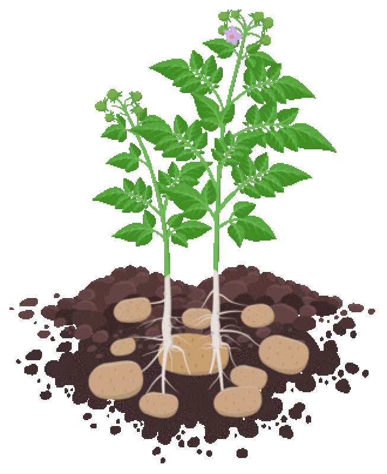

CompostMates is 100% student run. We have an 9 person executive team, with roles including:
Our Team.
- Co-Director: Sara Vandersip
- Co-Director: Simone McFarlane
- Volunteer Coordinator: Colin O’Hagerty
- Member Coordinator: Jillian Evans-Strong
- Analytics Director: Hallie Turner
- Social Media Director: Ellie Robert
- Treasurer: TBA
- Senior Advisor and Founder: Lydia Rowen
- Senior Advisor and Founder: Caroline Shubel We are always open to fresh ideas. If you'd like to join our team, contact us!
Just a couple months later, Lydia Rowen, along with Ideliya Khismatova, Daniel Sheyko, and Jason Yang, came together within the Environmental Affairs Committee (EAC) of UNC student government to work on the same project idea. The two teams worked separately to prepare for a launch in the Spring.
It was not until December 2020 that Caroline and Olivia learned of the EAC team when they launched their Instagram page. After an introductory Zoom call, the two teams decided to combine, and the rest is history!